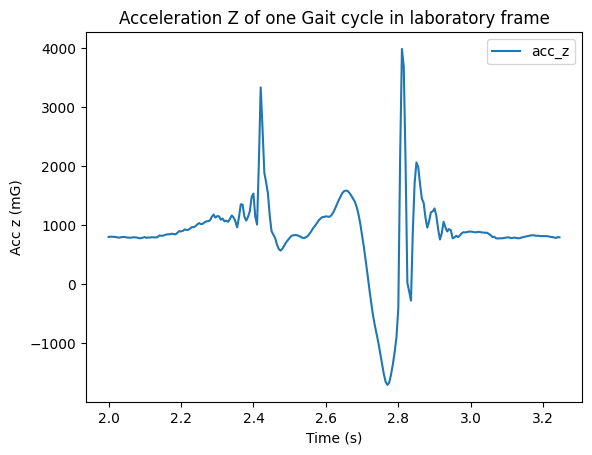
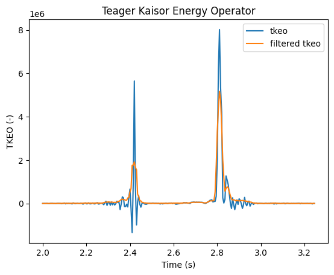
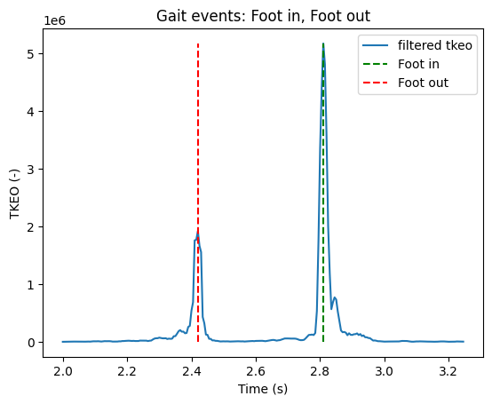

Gait event detection with TKEO
Detect the Foot in and Foot out event from a aceleration signal of a gait cycle
Load the data
[16]:
import os
import pandas as pd
import numpy as np
import matplotlib.pyplot as plt
import plotly.express as px
from scipy.signal import find_peaks
Side Function
[6]:
def TKEO(sig: np.ndarray) -> np.ndarray:
"""Teager kaisor operator on a given signal
Args:
sig (np.ndarray): signal to filter
Returns:
np.ndarray: filterd signal
"""
filtered_sig = sig.copy()
for i in range(1, len(sig)-2):
filtered_sig[i] = sig[i]**2 - (sig[i-1]*sig[i+1])
#TODO replace by vector operation for performance optimisation
# filtered_sig2 = sig.copy()
# filtered_sig2[1:-1] = sig[1:-1]**2 - (sig[2:]*sig[0:-2])
return filtered_sig
Load the data
The Data come from the NONAN Database
The data has been cleaned to only keep the IMU data of the foot, on one selected gait cycle
[7]:
df = pd.read_csv(r"./../../data/NONAN_Gaitprint/S001/S001/S001_1_cycle.csv")
[8]:
df.head()
[8]:
| Unnamed: 0 | time | Foot Accel Sensor X RT (mG) | Foot Accel Sensor Y RT (mG) | Foot Accel Sensor Z RT (mG) | Noraxon MyoMotion-Segments-Foot RT-Acceleration-x (mG) | Noraxon MyoMotion-Segments-Foot RT-Acceleration-y (mG) | Noraxon MyoMotion-Segments-Foot RT-Acceleration-z (mG) | Noraxon MyoMotion-Segments-Foot RT-Gyroscope-x (deg/s) | Noraxon MyoMotion-Segments-Foot RT-Gyroscope-y (deg/s) | Noraxon MyoMotion-Segments-Foot RT-Gyroscope-z (deg/s) | |
|---|---|---|---|---|---|---|---|---|---|---|---|
| 0 | 400 | 2.000 | -570.312500 | 167.480469 | 797.851562 | 4.903039 | -27.901346 | -5.479691 | -6.562500 | 13.289062 | -15.390625 |
| 1 | 401 | 2.005 | -579.589844 | 163.208008 | 801.757812 | 1.881335 | -23.102726 | 2.416857 | -6.597656 | 13.367188 | -15.867188 |
| 2 | 402 | 2.010 | -583.496094 | 154.296875 | 802.246094 | -5.259127 | -19.391565 | 3.728211 | -6.597656 | 13.367188 | -16.156250 |
| 3 | 403 | 2.015 | -592.773438 | 130.249023 | 799.804688 | -25.086977 | -5.520205 | 3.679663 | -6.562500 | 13.414062 | -16.359375 |
| 4 | 404 | 2.020 | -601.562500 | 117.004395 | 797.363281 | -34.805053 | 4.926870 | 5.047266 | -5.656250 | 13.125000 | -16.312500 |
[9]:
df.columns
[9]:
Index(['Unnamed: 0', 'time', 'Foot Accel Sensor X RT (mG)',
'Foot Accel Sensor Y RT (mG)', 'Foot Accel Sensor Z RT (mG)',
'Noraxon MyoMotion-Segments-Foot RT-Acceleration-x (mG)',
'Noraxon MyoMotion-Segments-Foot RT-Acceleration-y (mG)',
'Noraxon MyoMotion-Segments-Foot RT-Acceleration-z (mG)',
'Noraxon MyoMotion-Segments-Foot RT-Gyroscope-x (deg/s)',
'Noraxon MyoMotion-Segments-Foot RT-Gyroscope-y (deg/s)',
'Noraxon MyoMotion-Segments-Foot RT-Gyroscope-z (deg/s)'],
dtype='object')
[10]:
acc_z = df['Foot Accel Sensor Z RT (mG)'].to_numpy()
time = df['time'].to_numpy()
fs = len(time)/time[-1] - time[0]
Plot the acceleration of one gait cycle
[11]:
plt.figure()
plt.title("Acceleration Z of one Gait cycle in laboratory frame")
plt.plot(time, acc_z, label="acc_z")
plt.xlabel('Time (s)')
plt.ylabel('Acc z (mG)')
plt.legend()
[11]:
<matplotlib.legend.Legend at 0x268b4ba0910>

Compute the Teager Kaisor Energy Operator
[12]:
tkeo = TKEO(acc_z)
f_tkeo = np.convolve(np.ones(5)/5, abs(tkeo), mode="same")
[13]:
plt.figure()
plt.title("Teager Kaisor Energy Operator")
plt.plot(time, tkeo, label="tkeo")
plt.plot(time, f_tkeo, label="filtered tkeo")
plt.xlabel('Time (s)')
plt.ylabel('TKEO (-)')
plt.legend()
[13]:
<matplotlib.legend.Legend at 0x268b4db5900>

Find gait events
Find foot in and foot out events by searching maxes on tkeo filtered signal
[14]:
FI_idx = np.argmax(f_tkeo)
pseudo_mid_swing = np.argmin(f_tkeo[FI_idx-20: FI_idx]) + (FI_idx-20)
FO_idx = np.argmax(f_tkeo[0:pseudo_mid_swing])
FI_time = time[FI_idx]
FO_time = time[FO_idx]
[15]:
plt.figure()
plt.title("Gait events: Foot in, Foot out")
plt.plot(time, f_tkeo, label="filtered tkeo")
plt.vlines(FI_time, min(f_tkeo), max(f_tkeo), color='green', linestyle='dashed' ,label="Foot in")
plt.vlines(FO_time, min(f_tkeo), max(f_tkeo), color='red', linestyle='dashed' ,label="Foot out")
plt.xlabel('Time (s)')
plt.ylabel('TKEO (-)')
plt.legend()
[15]:
<matplotlib.legend.Legend at 0x268b4c2b880>
